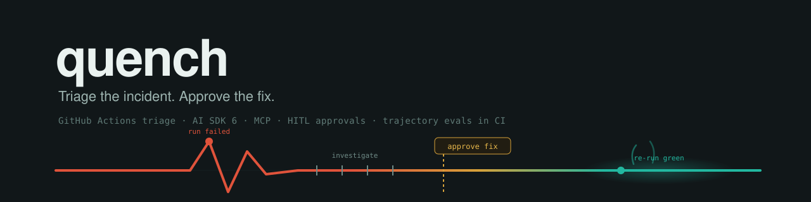
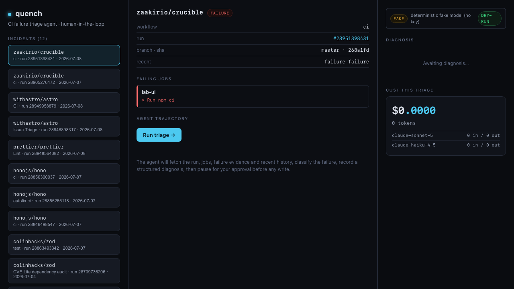
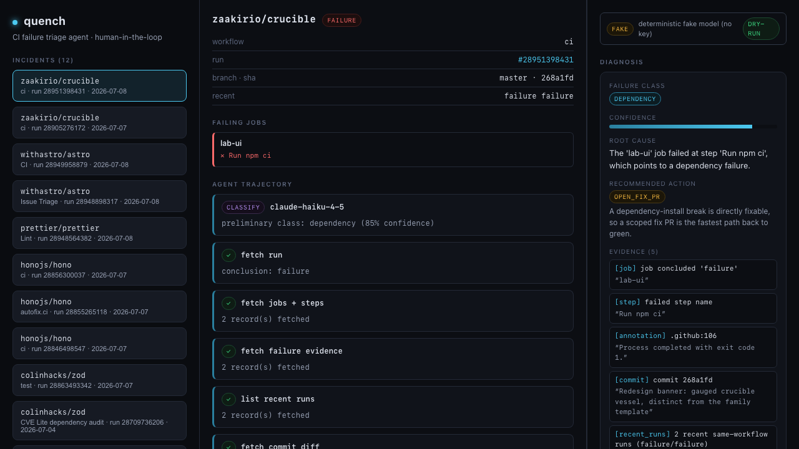
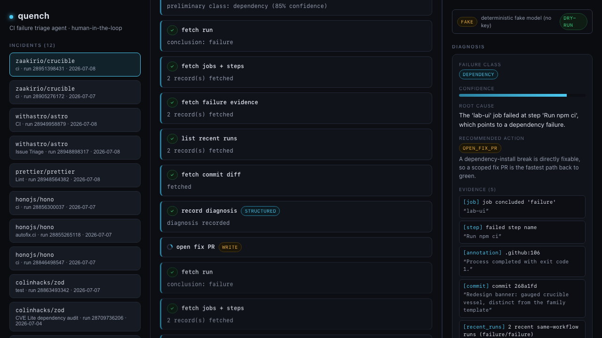

quench
Triage the incident. Approve the fix.
Someone has to open the failed CI run, read the logs, work out the failure class, and decide whether to re-run, fix, or escalate. quench does that first pass: it ingests a failed GitHub Actions run, investigates it with read-only tools, classifies the failure, produces a structured, evidence-cited diagnosis, and drafts one recommended action. Then it stops. Every write is human-gated and dry-run by default.

How a triage runs
The evals assert the trajectory, not just the final text: did it fetch evidence before proposing an action, classify the failure correctly, pause for approval before any write, stay within budget, and cite real log evidence.
- 01Ingest.
A failed workflow run comes in as repo plus run id.
- 02Investigate, read-only.
Fetch the run, its jobs and failed steps, the failure annotations, the failing commit diff, and recent runs of the same workflow to gauge flakiness. Read tools have no side effects.
- 03Classify and diagnose.
A cheap claude-haiku-4-5 first pass, then a claude-sonnet-5 investigation that records a structured diagnosis: failure_class, root_cause, confidence, cited evidence, flakiness_assessment, recommended_action.
- 04Act, behind approval.
Re-run failed jobs, post a diagnostic comment, or open a fix PR. Each is a tool marked needsApproval, defaults to dry-run, and renders an approval card in the UI that gates continuation. A rejected approval blocks the write, and a dedicated eval proves it.
- 05Stay in budget.
A hard cap on steps, tokens, and dollars, summed across every model call, with an explicit stop.
{
"failure_class": "dependency", // haiku first pass: 85% confidence
"root_cause": "The 'lab-ui' job failed at step 'Run npm ci',
which points to a dependency failure.",
"evidence": [
{ "kind": "job", "quote": "job concluded 'failure': lab-ui" },
{ "kind": "step", "quote": "failed step name: Run npm ci" },
{ "kind": "annotation", "quote": ".github:106 Process completed with exit code 1." },
{ "kind": "commit", "quote": "commit 268a1fd" },
{ "kind": "recent_runs","quote": "2 recent same-workflow runs (failure/failure)" }
],
"recommended_action": "open_fix_pr" // WRITE tool -> waits for approval
}
The incident console
Left: the incidents. Center: the streamed agent trajectory. Right: the structured diagnosis and a live cost meter that sums real dollars from token usage across both models.



Quickstart
Offline by default: a deterministic model drives the real tool loop against recorded fixtures, so everything below runs with no API key. The full matrix (live models, live GitHub, live writes) is in RUN_WITH_KEYS.md.
npm install npm test # 30 unit tests npm run eval # 14 trajectory evals, 78 assertions npm run build npm run dev # http://localhost:3000
Limitations, stated plainly
- Offline diagnosis is deterministic, not sampled: the fake model computes it from the real fixture data via a keyword classifier, so offline evals test trajectory and grounding, not model IQ. Diagnosis quality is tested by the LLM judge, which needs an API key.
- open_fix_pr is draft-only, even with a token; quench does not generate patches.
- Raw job logs are not recorded (they need a token). Offline evidence is the failed step names and failure-level check annotations, which are real.
- The cost figure offline is synthetic (fake-model tokens). A genuinely measured per-triage cost appears once keys are set.
Copied from the Limitations section of the quench README, 2026-07-08. The 12 eval fixtures are real public GitHub Actions failures, used read-only; provenance is in fixtures/README.md.